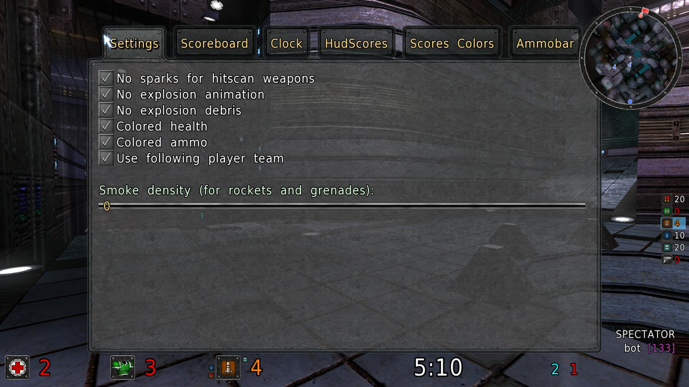
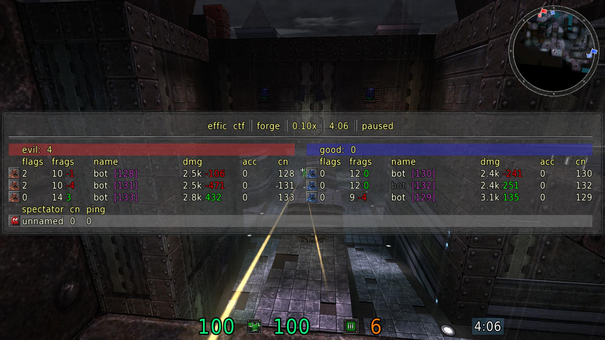
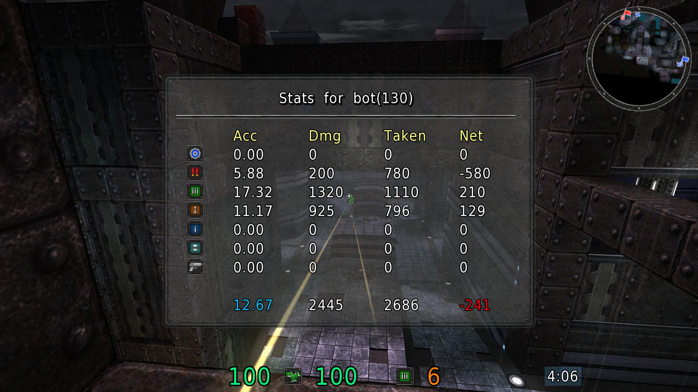
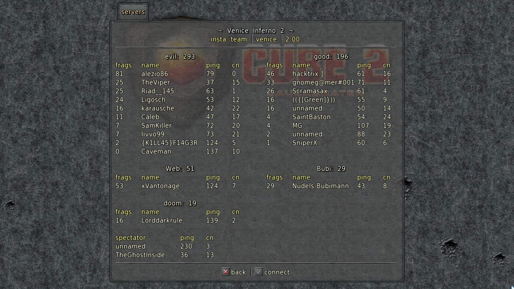

Version
Sauerbraten SDL2 Client
Download
This client is based on pisto's work of porting the Sauerbraten client from SDL 1.2 to SDL 2, which should give better mouse input in some cases. It offers the same features as pisto's SDoS client, except for the multipoll functionality. Multipoll aims to minimize the input lag and as a result it is less constant and thus (for some people) hard to get used to. Instead, with this client, using high maxfps values like 250/500/1000 (or multiples of your screen's refresh rate) will reduce sceen tearing, while ensuring a constant input polling rate and avoiding input lag due to vsync.
Note: if you still have performance issues try to set /maxfps 0.
Visual Studio and official SDL2 libraries for Windows are used. In combination with replacing multipoll with the old and tested Sauerbraten code, this will result in better performance and compatibility with more OS/hardware combinations. This client also offers some additional game hud elements, which we feel have been missing for years (all of them are diabled by default and separate config files are used).
Features
- Open source: code is on GitHub
- Native build system/libraries are used (no static linking)
- Improved ALT + TAB functionality
- Detailed statistics per player (e.g. accuracy and damage per weapon) via
/showplayerstatscommand (due to current network protocol limitations, statistics are gathered only after connecting to a server) - Optional detailed statistics logging on a game end
- Server previews, to enable it use
/showserverpreviews 1command
- New hud elements: clock, scores and ammobar
- Customization of all new hud elements postions and sizes
- Colored health and armour
- Options to show more statistics on scoreboard
- Easy to use GUI for configuration of new features
/extendedsettingscommand - New command
/ignoreserverto permanently ignore any server on the master list - New command
/demoseek min secto make a fast rewind to any position in a demo



